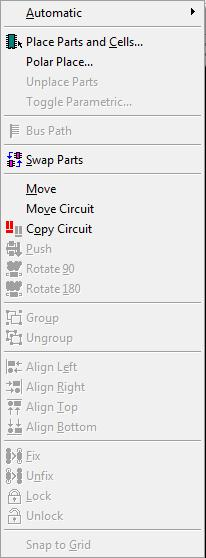
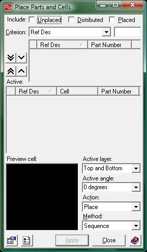
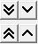
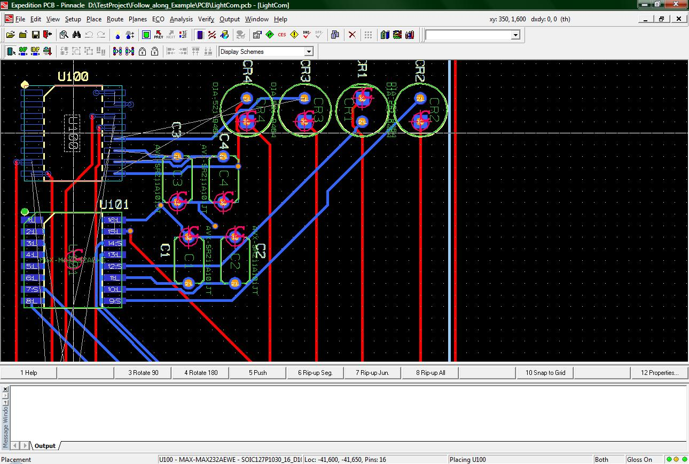
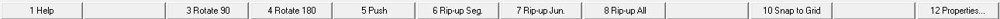

Place Menu:
The Place menu looks like the following.

(1-place_menu.jpg)
The only option from that menu you will truly need is the “Place Parts and Cells…”. This will open the wizard to place parts/cells on your board. If you have performed a forward annotation, (the process to obtain cells and how they are connected from a DxDesigner schematic) then opening up this window will get you started in the final drawing of your board. The place Cells wizard looks like the following.

(2-place_window.jpg)
When you first open this window it is a little deceiving. Why, since we have performed a forward annotation, are there no parts to be placed? This is because the Expedition PCB interface recognizes three different statuses for your parts. These three statuses are: Placed, Unplaced, and Distributed.
At the top of the place window, there are three check boxes for each status that a part/cell might be under. If there are no check boxes marked, then there are no cells/parts to be placed/moved. Click on the check box “Unplaced” to populate the field below the check boxes with all of the unplaced parts/cells. If you were to click on the “Placed” checkbox you will be able to populate the field below with parts that have already been placed as well.
To the left of the field that gets populated with all the parts/cells depending on which check boxes are activated, you will notice these 4 buttons.

(3-buttons.jpg)
The top two buttons are used to add parts/cells to the placement queue, which just so happens to be the field in the center of the window. The button with two arrows pointing down will add all parts/cells from the field immediately to the right of the buttons. The button with one arrow pointing down only adds one part/cell as a way to selectively add parts/cells to the placement queue.
Once you are parts in your placement queue you can click on the apply button at the bottom of the window to start placing those parts. This action will minimize the place window and you will have a part “attached” to the mouse cursor ready for a left click to place.
The bottom section of the place window has a display window on the left and 4 drop down boxes on the right. The drop down boxes are used to determine which action you will be performing, the orientation of each part/cell to be placed/picked up and whether to place or pick up parts/cells. The standard settings are to place the parts/cells in their standard position and on the top layer of the board. You will only need to change the settings in the 4 drop down boxes if you are not going to place parts/cells and/or you want to place them in a specific orientation.
While placing parts on your board, you are not restricted to only placing parts on the top layer. There are several methods to place parts on the bottom layer of the board. One method is to change the active layer from “top and bottom” to only “bottom”. Doing this could create some problems later on with accessing parts on the top layer so I will show you a better way.

(4-placement.jpg)
The previous picture displays several parts already placed, however there is one part that I want to place on the bottom layer. In order to do that I will need to consult the toolbar near the bottom of the screen. This toolbar updates with functions relevant to your current action, and for placement it gives us the following options

(5-toolbar.jpg)
The fifth toolbar option is called “push”. This button allows you to place chips on either to top or the bottom layers.